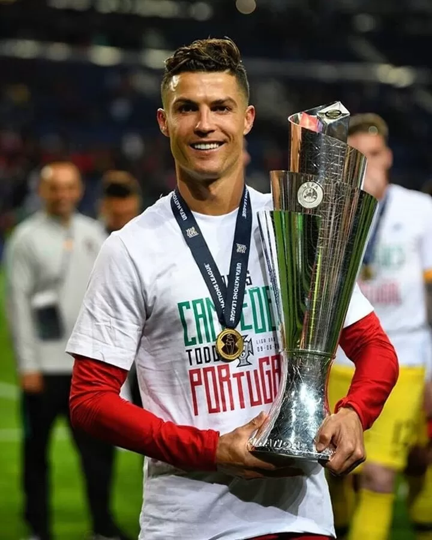
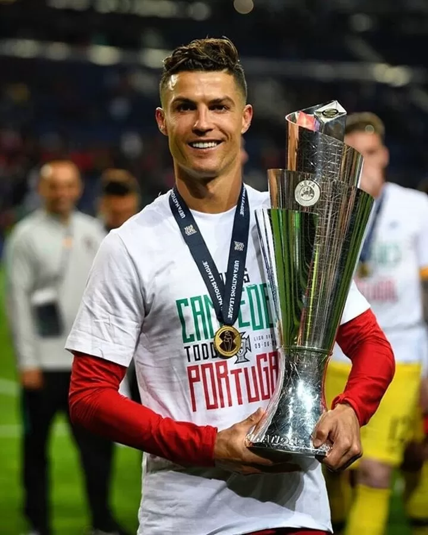

Cristiano Ronaldo has played for sporting cp, Manchester united, Real madrid, Juventus, Alnassar. Throughout his legendary carrer, he has 7 multiple league titles, 5 champaians league 3 trophy for portugal and many more individuals awards. He has scored modt of the goals in football histroy ie 956 goals till now, in which 130+ for national team.
His stats and trophies with achievments.
Ronaldo made his international debut for Portugal in 2003 at the age of 18 and has earned more than 200 caps, making him history's most-capped male player.[7] He has played in eleven major tournaments. He scored his first international goal in Euro 2004, where he helped Portugal reach the final and subsequently made the team of the tournament. He assumed captaincy of the national team ahead of Euro 2008; and at Euro 2012, he was named in the team of the tournament. Ronaldo led Portugal to their first major tournament title at Euro 2016, being named in the team of the tournament for the third time. In the 2018 World Cup, he had his most prolific World Cup campaign with four goals. He received the Golden Boot as the top scorer of Euro 2020 before playing in his fifth World Cup at the 2022 World Cup. Now heading to his sith wc in 2026.
 
